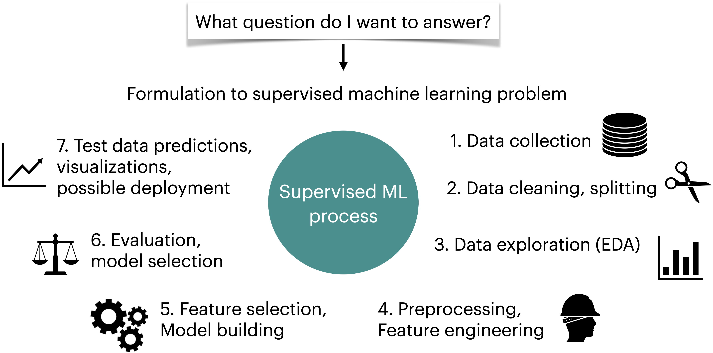

Lecture 1: Course Introduction
Contents

Lecture 1: Course Introduction#
UBC 2022-23
Instructor: Varada Kolhatkar
Imports#
import glob
import os
import re
import sys
import matplotlib.pyplot as plt
import numpy as np
import pandas as pd
sys.path.append("code/.")
import graphviz
import IPython
import mglearn
from IPython.display import HTML, display
from sklearn.dummy import DummyClassifier
from sklearn.feature_extraction.text import CountVectorizer
from sklearn.linear_model import LinearRegression, LogisticRegression
from sklearn.model_selection import train_test_split
from sklearn.pipeline import Pipeline, make_pipeline
from sklearn.tree import DecisionTreeClassifier, DecisionTreeRegressor, export_graphviz
plt.rcParams["font.size"] = 16
pd.set_option("display.max_colwidth", 200)
Learning outcomes#
From this lecture, you will be able to
explain the motivation to study machine learning;
explain supervised machine learning;
navigate through the course material;
be familiar with the policies and how the class is going to run;
Characters in this course?#
CPSC 330 teaching team (me and the TAs)
Eva (a fictitious enthusiastic student)
And you all, of course 🙂!
Meet your CPSC 330 instructor#

My name is Varada Kolhatkar [ʋəɾəda kɔːlɦəʈkər]
You can call me Varada. If Varada is hard for you, you can call me V or Ada.
I am an Assistant Professor of Teaching in Computer Science.
I did my Ph.D. in Computational Linguistics at the University of Toronto.
I primarily teach machine learning courses in the Master of Data Science (MDS) program.
Mike Gelbart has designed this course, this is my second time teaching it.
Contact information
Email: kvarada@cs.ubc.ca
Office: ICCS 237
Meet CPSC 330 TAs#
Vedant Bahel is a first year graduate student in Computer Science. He majorly works on Human-Computer Interaction and AI. He is a former TEDx speaker and he loves coffee. |
|
Wenkai Chen is a first year MSc student in Computer Science. He completed his undergraduate degree in Software Engineering at BUPT, China. He is currently interested in Commonsense Reasoning and Question Answering. |
|
Anubhav Garg is a 1st year MSc CS student. He is from Delhi and he did his undergraduate degree from BITS Pilani, India. He has two years of experience in industrial research, where he published in the domain of Automatic Machine Learning in top venues like NeurIPS, ICLR etc. |
|
Lucas Jin is a senior student pursuing his B.Sc. degree in Computer Science. His fields are Software Engineering and Machine Learning. His motto is “Stay Hungry, Stay Foolish,” and he always hopes to use technology to make the world a better place for everybody equally. Besides his tech portfolio, he is also an avid orchestra enthusiast and an experienced choir conductor/tenor singer. He plays marimba, xylophone, vibraphone, and drumset. He was a percussionist in a Golden Sail Wind Band in Beijing. He loves early music (J.S. Bach) and fugue, while he also likes to sing/organize A Cappella. |
|
|
Saiyue Lyu is a first-year PhD student in Computer Science doing machine learning. She finished her undergrad at UWaterloo in Pure Math and Combinatorics and Optimization, and completed her Masters at UWaterloo as well in Computer Science doing mathematical algorithms. She is so excited to get rid of the long winter and come to UBC! |
|
Ben Norman is a second year PhD student in Computer Science doing Machine Learning. His main interests is in Curriculum Generation for Deep Reinforcement Learning. He did a mathematics undergrad and masters at Cambridge in England. He loves the nature here in Vancouver! |


{kind=link}
{kind=link}
{kind=link}
{kind=link}
Meet Eva (a fictitious persona)!#
Eva is among one of you. She has some experience in Python programming. She knows machine learning as a buzz word. During her recent internship, she has developed some interest and curiosity in the field. She wants to learn what is it and how to use it. She is a curious person and usually has a lot of questions!
You all#
Since we’re going to spend the semester with each other, I would like to know you a bit better.
Please fill out Getting to know you survey when you get a chance.
Go to our course webpage:
https://github.com/UBC-CS/cpsc330
Follow the link to Course Jupyter book
https://ubc-cs.github.io/cpsc330
You’ll see the lecture notes rendered as an html there.
Attention!!
You are welcome to ask questions by raising your hand. There is also a reflection Google Document for this course for your questions/comments/reflections. It will be great if you can write about your takeaways, struggle points, and general comments in this document so that I’ll try to address those points in the next lecture.
Why machine learning (ML)? [video]#
See also
Check out the accompanying video on this material.
Prevalence of ML#
Let’s look at some examples.

Saving time and scaling products#
Imagine writing a program for spam identification, i.e., whether an email is spam or non-spam.
Traditional programming
Come up with rules using human understanding of spam messages.
Time consuming and hard to come up with robust set of rules.
Machine learning
Collect large amount of data of spam and non-spam emails and let the machine learning algorithm figure out rules.
With machine learning, you’re likely to
Save time
Customize and scale products
Supervised machine learning#
Types of machine learning#
Here are some typical learning problems.
Supervised learning (Gmail spam filtering)
Training a model from input data and its corresponding targets to predict targets for new examples.
Unsupervised learning (Google News)
Training a model to find patterns in a dataset, typically an unlabeled dataset.
Reinforcement learning (AlphaGo)
A family of algorithms for finding suitable actions to take in a given situation in order to maximize a reward.
Recommendation systems (Amazon item recommendation system)
Predict the “rating” or “preference” a user would give to an item.
What is supervised machine learning (ML)?#
Training data comprises a set of observations (\(X\)) and their corresponding targets (\(y\)).
We wish to find a model function \(f\) that relates \(X\) to \(y\).
We use the model function to predict targets of new examples.

Example: Predict whether a message is spam or not#
Input features \(X\) and target \(y\)#
Note
Do not worry about the code and syntax for now.
Note
Download SMS Spam Collection Dataset from here.
Training a supervised machine learning model with \(X\) and \(y\)#
sms_df = pd.read_csv("data/spam.csv", encoding="latin-1")
sms_df = sms_df.drop(columns = ["Unnamed: 2", "Unnamed: 3", "Unnamed: 4"])
sms_df = sms_df.rename(columns={"v1": "target", "v2": "sms"})
train_df, test_df = train_test_split(sms_df, test_size=0.10, random_state=42)
HTML(train_df.head().to_html(index=False))
| target | sms |
|---|---|
| spam | LookAtMe!: Thanks for your purchase of a video clip from LookAtMe!, you've been charged 35p. Think you can do better? Why not send a video in a MMSto 32323. |
| ham | Aight, I'll hit you up when I get some cash |
| ham | Don no da:)whats you plan? |
| ham | Going to take your babe out ? |
| ham | No need lar. Jus testing e phone card. Dunno network not gd i thk. Me waiting 4 my sis 2 finish bathing so i can bathe. Dun disturb u liao u cleaning ur room. |
X_train, y_train = train_df["sms"], train_df["target"]
X_test, y_test = test_df["sms"], test_df["target"]
clf = Pipeline(
[
("vect", CountVectorizer(max_features=5000)),
("clf", LogisticRegression(max_iter=5000)),
]
)
clf.fit(X_train, y_train);
Predicting on unseen data using the trained model#
pd.DataFrame(X_test[0:4])
| sms | |
|---|---|
| 3245 | Funny fact Nobody teaches volcanoes 2 erupt, tsunamis 2 arise, hurricanes 2 sway aroundn no 1 teaches hw 2 choose a wife Natural disasters just happens |
| 944 | I sent my scores to sophas and i had to do secondary application for a few schools. I think if you are thinking of applying, do a research on cost also. Contact joke ogunrinde, her school is one m... |
| 1044 | We know someone who you know that fancies you. Call 09058097218 to find out who. POBox 6, LS15HB 150p |
| 2484 | Only if you promise your getting out as SOON as you can. And you'll text me in the morning to let me know you made it in ok. |
Note
Do not worry about the code and syntax for now.
pred_dict = {
"sms": X_test[0:4],
"spam_predictions": clf.predict(X_test[0:4]),
}
pred_df = pd.DataFrame(pred_dict)
pred_df.style.set_properties(**{"text-align": "left"})
| sms | spam_predictions | |
|---|---|---|
| 3245 | Funny fact Nobody teaches volcanoes 2 erupt, tsunamis 2 arise, hurricanes 2 sway aroundn no 1 teaches hw 2 choose a wife Natural disasters just happens | ham |
| 944 | I sent my scores to sophas and i had to do secondary application for a few schools. I think if you are thinking of applying, do a research on cost also. Contact joke ogunrinde, her school is one me the less expensive ones | ham |
| 1044 | We know someone who you know that fancies you. Call 09058097218 to find out who. POBox 6, LS15HB 150p | spam |
| 2484 | Only if you promise your getting out as SOON as you can. And you'll text me in the morning to let me know you made it in ok. | ham |
We have accurately predicted labels for the unseen text messages above!
(Supervised) machine learning: popular definition#
A field of study that gives computers the ability to learn without being explicitly programmed.
-- Arthur Samuel (1959)
ML is a different way to think about problem solving.

Examples#
Let’s look at some concrete examples of supervised machine learning.
Note
Do not worry about the code at this point. Just focus on the input and output in each example.
Example 1: Predicting whether a patient has a liver disease or not#
Input data#
Suppose we are interested in predicting whether a patient has the disease or not. We are given some tabular data with inputs and outputs of liver patients, as shown below. The data contains a number of input features and a special column called “Target” which is the output we are interested in predicting.
Note
Download the data from here.
Note
Download the data from here.
df = pd.read_csv("data/indian_liver_patient.csv")
df = df.drop(columns = ["Gender"])
df["Dataset"] = df["Dataset"].replace(1, "Disease")
df["Dataset"] = df["Dataset"].replace(2, "No Disease")
df.rename(columns={"Dataset": "Target"}, inplace=True)
train_df, test_df = train_test_split(df, test_size=4, random_state=42)
HTML(train_df.head().to_html(index=False))
| Age | Total_Bilirubin | Direct_Bilirubin | Alkaline_Phosphotase | Alamine_Aminotransferase | Aspartate_Aminotransferase | Total_Protiens | Albumin | Albumin_and_Globulin_Ratio | Target |
|---|---|---|---|---|---|---|---|---|---|
| 40 | 14.5 | 6.4 | 358 | 50 | 75 | 5.7 | 2.1 | 0.50 | Disease |
| 33 | 0.7 | 0.2 | 256 | 21 | 30 | 8.5 | 3.9 | 0.80 | Disease |
| 24 | 0.7 | 0.2 | 188 | 11 | 10 | 5.5 | 2.3 | 0.71 | No Disease |
| 60 | 0.7 | 0.2 | 171 | 31 | 26 | 7.0 | 3.5 | 1.00 | No Disease |
| 18 | 0.8 | 0.2 | 199 | 34 | 31 | 6.5 | 3.5 | 1.16 | No Disease |
Building a supervise machine learning model#
Let’s train a supervised machine learning model with the input and output above.
from lightgbm.sklearn import LGBMClassifier
X_train = train_df.drop(columns=["Target"])
y_train = train_df["Target"]
X_test = test_df.drop(columns=["Target"])
y_test = test_df["Target"]
model = LGBMClassifier(random_state=123)
model.fit(X_train, y_train)
LGBMClassifier(random_state=123)In a Jupyter environment, please rerun this cell to show the HTML representation or trust the notebook.
On GitHub, the HTML representation is unable to render, please try loading this page with nbviewer.org.
LGBMClassifier(random_state=123)
Model predictions on unseen data#
Given features of new patients below we’ll use this model to predict whether these patients have the liver disease or not.
HTML(X_test.reset_index(drop=True).to_html(index=False))
| Age | Total_Bilirubin | Direct_Bilirubin | Alkaline_Phosphotase | Alamine_Aminotransferase | Aspartate_Aminotransferase | Total_Protiens | Albumin | Albumin_and_Globulin_Ratio |
|---|---|---|---|---|---|---|---|---|
| 19 | 1.4 | 0.8 | 178 | 13 | 26 | 8.0 | 4.6 | 1.30 |
| 12 | 1.0 | 0.2 | 719 | 157 | 108 | 7.2 | 3.7 | 1.00 |
| 60 | 5.7 | 2.8 | 214 | 412 | 850 | 7.3 | 3.2 | 0.78 |
| 42 | 0.5 | 0.1 | 162 | 155 | 108 | 8.1 | 4.0 | 0.90 |
pred_df = pd.DataFrame({"Predicted_target": model.predict(X_test).tolist()})
df_concat = pd.concat([pred_df, X_test.reset_index(drop=True)], axis=1)
HTML(df_concat.to_html(index=False))
| Predicted_target | Age | Total_Bilirubin | Direct_Bilirubin | Alkaline_Phosphotase | Alamine_Aminotransferase | Aspartate_Aminotransferase | Total_Protiens | Albumin | Albumin_and_Globulin_Ratio |
|---|---|---|---|---|---|---|---|---|---|
| No Disease | 19 | 1.4 | 0.8 | 178 | 13 | 26 | 8.0 | 4.6 | 1.30 |
| Disease | 12 | 1.0 | 0.2 | 719 | 157 | 108 | 7.2 | 3.7 | 1.00 |
| Disease | 60 | 5.7 | 2.8 | 214 | 412 | 850 | 7.3 | 3.2 | 0.78 |
| Disease | 42 | 0.5 | 0.1 | 162 | 155 | 108 | 8.1 | 4.0 | 0.90 |
Example 2: Predicting the label of a given image#
Suppose you want to predict the label of a given image using supervised machine learning. We are using a pre-trained model here to predict labels of new unseen images.
Note
Assuming that you have successfully created cpsc330 conda environment on your computer, you’ll have to install torchvision in cpsc330 conda environment to run the following code. If you are unable to install torchvision on your laptop, please don’t worry at this point. It’s not crucial at this point.
conda activate cpsc330 conda install -c pytorch torchvision
from utils import *
from PIL import Image
# Predict labels with associated probabilities for unseen images
images = glob.glob("data/test_images/*.*")
for image in images:
img = Image.open(image)
img.load()
plt.imshow(img)
plt.show()
df = classify_image(img)
print(df.to_string(index=False))
print("--------------------------------------------------------------")
Class Probability score
tiger cat 0.357
tabby, tabby cat 0.207
lynx, catamount 0.049
Pembroke, Pembroke Welsh corgi 0.046
--------------------------------------------------------------
Class Probability score
cheetah, chetah, Acinonyx jubatus 0.982
leopard, Panthera pardus 0.012
jaguar, panther, Panthera onca, Felis onca 0.004
snow leopard, ounce, Panthera uncia 0.001
--------------------------------------------------------------
Class Probability score
macaque 0.714
patas, hussar monkey, Erythrocebus patas 0.122
proboscis monkey, Nasalis larvatus 0.098
guenon, guenon monkey 0.017
--------------------------------------------------------------
Class Probability score
Walker hound, Walker foxhound 0.577
EntleBucher 0.089
English foxhound 0.086
beagle 0.063
--------------------------------------------------------------
Example 3: Predicting sentiment expressed in a movie review#
Suppose you are interested in predicting whether a given movie review is positive or negative. You can do it using supervised machine learning.
Note
Download the data from here.
imdb_df = pd.read_csv("data/imdb_master.csv", encoding="ISO-8859-1")
imdb_df = imdb_df[imdb_df["label"].str.startswith(("pos", "neg"))]
imdb_df = imdb_df.drop(columns = ["Unnamed: 0", "type", "file"])
imdb_df.rename(columns={"label": "target"}, inplace=True)
train_df, test_df = train_test_split(imdb_df, test_size=0.10, random_state=123)
HTML(train_df.head().to_html(index=False))
| review | target |
|---|---|
| It may have been inevitable that with the onslaught of "slasher" movies in the early 1980's, that a few good ones might slip through the cracks. This is a great "rare" film from Jeff Lieberman, who insured his cult status with his memorable 1970's films "Squirm" and "Blue Sunshine".<br /><br />Five young people head into the Oregon mountains (this movie was actually shot on location) to do some camping and check out the deed to some land that one of them has acquired. Before long, they will predictably be terrorized by a bulky killer with an incredibly creepy wheezing laugh.<br /><br />"Just Before Dawn" is noticeably more ambitious, "arty", and intelligent than some slasher films. Lieberman actually fleshes out the characters - well, two of them, anyway - as much as a 90-minute-long film will allow him. The film has genuine moments of suspense and tension, and actually refrains from graphic gore, save for one killing right at the beginning.<br /><br />There is an above-average cast here, including Oscar winner George Kennedy, as a forest ranger who's understandably gone a little flaky from having been alone in the wilderness for too long. Jack Lemmon's son Chris, future Brian De Palma regular Gregg Henry, blonde lead Deborah Benson (it's too bad she hasn't become a more well-known performer, judging by her work here), Ralph Seymour ("Ghoulies"), Mike Kellin ("Sleepaway Camp"), and Jamie Rose ("Chopper Chicks in Zombietown") round out the cast.<br /><br />Some of the shots are interesting, and the early music score by Brad Feidel (now best known for his "Terminator" theme) is haunting and atmospheric.<br /><br />This is worth catching for the important plot twist at about the one hour mark, although a moment at about 75 minutes in involving the heroine and a tree and the killer is almost comical; it may actually remind a viewer of a cartoon! One of the most clever touches is the final dispatching of the killer, which I'd never seen before in a horror film and probably won't see again.<br /><br />I didn't give it 10 out of 10 because I can't honestly that I was that frightened. Still, it's an interesting slasher that is worthy of re-discovery.<br /><br />"That deed don't mean nothing, son. Those mountains can't read."<br /><br />9/10 | pos |
| Tell the truth Iâ??m a bit stun to see all these positive review by so many people, which is also the main reason why I actually decide to see this movie. And after having seen it, I was really a disappointed, and this comes from the guy that loves this genre of movie.<br /><br />Iâ??m surprise at this movie all completely â?? it is like a kidâ??s movie with nudity for absolutely no reason and it all involve little children cursing and swearing. Iâ??m not at all righteous but this has really gone too far in my account.<br /><br />Synopsis: The story about two guys got send to the big brother program for their reckless behavior. There they met up with one kids with boobs obsession and the other is a medieval freak.<br /><br />Just the name it self is not really connected with the story at all. They are not being a role model and or do anything but to serve their time for what they have done. The story is very predictable (though expected) and the humor is lame. And havenâ??t we already seen the same characters (play by Mc Lovinâ??) in so many other movies (like Sasquatch Gang?). I think I laugh thrice and almost fell a sleep.<br /><br />Well the casting was alright after all he is the one that produce the screenplay. And the acting is so-so as expected when youâ??re watching this type of movie. And the direction, what do one expect? This is the same guy who brought us Wet Hot American Summer, and that movie also sucks. But somehow he always managed to bring in some star to attract his horrendous movie.<br /><br />Anyway I felt not total riff off but a completely waste of time. Only the naked scenes seem to be the best part in the movie. Canâ??t really see any point why I should recommend this to anyone.<br /><br />Pros: Elizabeth Bank? Two topless scenes.<br /><br />Cons: Not funny, dreadful story, nudity and kids do not mix together.<br /><br />Rating: 3.5/10 (Grade: F) | neg |
| After getting thrown out of their last job and finding employment scarce in the United Kingdom, the six members of the Wonder Boys, better known as The Crazy Gang see an advertisement for employment in the gold strike town of Red Gulch in the Yukon Territory. It's from a newspaper clipping and on the back there's a story about Chamberlain saying the country better be prepared for war. Off they go to the Yukon and The Frozen Limits.<br /><br />By the way, it's case of misplaced Chamberlains. The clipping is forty years old and it refers to Joe Chamberlain and the Boer War rather than Neville in the current crisis. But that's typical of how things go for this crew. I can see Stan Laurel making the same mistake.<br /><br />Of course when they get there it's a ghost town inhabited only by young Jean Kent and her grandfather Moore Marriott. He's getting on in years and is a bit touched in the head. Marriott's got a gold mine that he's misplaced somewhere that he goes to in his sleep, that is when he's sleepwalking. The Gang better help him find that mine or otherwise pretty Ms. Kent won't marry stalwart trapper Anthony Hulme, but rather saloon owner Bernard Lee, a fate worse than death.<br /><br />This was my first exposure to the Crazy Gang and I can see both why they were so acclaimed in the UK and why they never made any impact across the pond. The jokes come fast and furious and then were a number of things that the Code in the USA just wouldn't allow. The jokes are also strictly topical British and a lot just wouldn't be gotten over here.<br /><br />The sight gags are universal, the final chase scene is worthy of anything that the Marx Brothers did in America. My suggestion is that if you watch The Frozen Limits, tape it if you have a working familiarity with British history and run it two or three times just to make sure you pick up everything. It will be worth it. | pos |
| The plot for a movie such of this is a giveaway. How can you go wrong with a gay plot line and all the colors and music of India - a story like this writes itself. I'll watch most anything, but this was unwatchable. The sad thing is, the white folks are the most colorful in the film. Vanessa was a riot with a mouth like a sailor, and Jack was great eye candy, but everyone else was so boring. Saeed Jeffrey, who was exceptional in My Beautiful Landrette, did what he could but the story was so boring. The saving grace was really the background music, which made it OK to laugh at the film, instead of with the film, or not at all. There are many other better gay movies, ethnic movies, just plain movies. I give a lot of low budget movies a pass, but this shouldn't have been made, or should have been made by someone else. | neg |
| It is a damn good movie,with some surprising twists,a good cast and a great script. Only a couple of stupid bits,like the Rasta hit-man scene (This guy's a professional?) but that has been commented on already. The fact I had only heard one guy at work mention it before, and did not have many opinions or reviews to go on, made it even more entertaining. This gets a higher score than maybe some people think it deserves, but I have to factor in the low budget and the good effort from the cast. It sickens me that some movies get made whose budget equals the GDP of a small country,with a hyped up release,good reviews,an Oscar winning director and/or actors, and turn out to be so disappointing,with actors sleepwalking through their roles and uninspired directing,with predictable plot lines and a story with holes in it so big,Sandra Bullock could drive a bomb-loaded bus through it. (Examples in my opinion are The Terminal,Castaway,Matrix:Revolutions) Extra points are awarded for the wardrobe department choosing great clothes for the cast,especially Paulina Porizcova,who wears a rubber dress in one scene,and a jacket with "c*nt" on the back in large letters in another!A sex scene which shows off her tight ass and a good soundtrack are added bonuses! And PLEASE,enough with the Tarantino comparisons,this did not remind me of a Tarantino flick at all.... and Tarantino borrows virtually every idea he has ever had from other movies! Even if that is your opinion,are we saying once a certain film or book is written or directed one way,no-one can ever use the same ideas again? get real. This film has it's own style. | pos |
# Build an ML model
X_train, y_train = train_df["review"], train_df["target"]
X_test, y_test = test_df["review"], test_df["target"]
clf = Pipeline(
[
("vect", CountVectorizer(max_features=5000)),
("clf", LogisticRegression(max_iter=5000)),
]
)
clf.fit(X_train, y_train);
# Predict on unseen data using the built model
pred_dict = {
"reviews": X_test[0:4],
"sentiment_predictions": clf.predict(X_test[0:4]),
}
pred_df = pd.DataFrame(pred_dict)
pred_df.style.set_properties(**{"text-align": "left"})
| reviews | sentiment_predictions | |
|---|---|---|
| 11872 | You'll feel like you've experienced a vacation in Hell after you have sat down and watched this horrible TV movie. This movie is an exercise in over-acting (very bad over-acting) to situations that made out to be more than what they are. I won't give away the plot, but once you realize why the people in this film are running from the native man in the film you will demand the two wasted hours of your life back. The only plus is seeing Marcia Brady running around in a bikini! | neg |
| 40828 | Bela Lugosi gets to play one of his rare good guy roles in a serial based upon the long running radio hit (which was also the source of a feature film where Lugosi played the villain.) Lugosi cuts a fine dashing figure and its sad that he didn't get more roles where he could be the guy in command in a good way. Here Chandu returns from the East in order to help the Princess Nadji who is being hunted by the leaders of the cult of Ubasti who need her to bring back from the dead the high priestess of their cult. This is a good looking globe trotting serial that is a great deal of fun. To be certain the pacing is a bit slack, more akin to one of Principals (the producing studios) features then a rip roaring adventure, but it's still enjoyable. This plays better than the two feature films that were cut from it because it allows for things to happen at their own pace instead of feeling rushed or having a sense that "hey I missed something". One of the trilogy of three good serials Lugosi made, the others being SOS Coast Guard and Phantom Creeps | pos |
| 36400 | When you wish for the dragon to eat every cast member, you know you're in for a bad ride. I went in with very, very low expectations, having read some of the other comments, and was not let down. Unlike some other cheap and failed movies, however, this one doesn't really remain hilariously (and unintentionally) funny throughout. -SPOILERS FOLLOW- First of all, plot it very inconsistent. Looking past the "small" mistakes, such as the dragon growing up in 3 hours, the whole idea it's based on is messed up. See, the movie wants us to believe that dragons came from outer space in the form of meteorites which really were dragon eggs. After explaining this, they show some peasant poking at one with his pitchfork and the dragon pops out. Later, the obligatory "crazy scientist" guy babbles on about how dragons outlived the dinosaurs. So apparently humans were around when dinosaurs were, or we just have a fine little plot hole here. The other major thing is that the lab is blown up with a force "half as strong" as what was used for Hiroshima. Then two guys later walk in to check everything out, and it's almost unscathed! There's even another dragon, which grew out of who knows what. All in all it's very predictable. As soon as the guy mentioned cloning, I guessed they'd clone a dragon. That means that our Mr. Smarty-pants security guy isn't so intuitive and smart as the movie would have you believe, if you ignore that I knew this film would be about, you know, dragons. Putting that aside, the second worst thing is the "special effects." Others have mentioned the fake rocks falling during the beginning, the CG helicopter, and the dragon. It looks a bit better than a blob, but it ruined whatever it had going for it when it trudged down the hall in the same manner time after time. To their credit, the flying dragons in the beginning looked OK from far away (although the one in the cave is probably the worst one in the whole movie.) These things are funny to watch, however. The scenes where a million different shots of the same person facing different ways are shown are not. Nor are the "introduction" screens with the vital stats. Coming to the actors, they weren't the greatest, but I guess at least they tried? They seemed more enthusiastic about what they were doing than many of the actors participating in the recent "BloodRayne," for example, and you've got to give them points for that. One thing I noticed though was that the woman who plays Meredith often had her face covered in make-up that was many tones lighter than the rest of her. She looked like she had a bad run-in with some white-face. The script is bad and cheesy. You don't really notice the music, but it's actually not too bad for the most part. The bottom line is don't watch it unless you want to see it because you hear it's bad (like I did), although the only funny things are the bad CG effects. Other than that, don't waste your time and money. |
neg |
| 5166 | Sorry, but Jacqueline Hyde (get it??? - Jack L and Hyde - Jekyll & Hyde) has some of the worst acting this side of hardcore porn, not to mention a script apparently written by a first-grader with undiagnosed learning disabilities. Jackie Hyde inherits an old mansion by a grandfather she never knew she had. Guess who? Yes, an inventor of the special formula that slowly takes over one's body and mind - yes, that Mr. Hyde! Despite some nice skin scenes, this film fails to register any feeling or emotion other than uncontrollable laughter. As much as poor Jackie tries she just can't stay away from granddaddy's special formula and the result is an hour and half of wasted time. |
neg |
Example 4: Predicting housing prices#
Suppose we want to predict housing prices given a number of attributes associated with houses.
Note
Download the data from here.
df = pd.read_csv("data/kc_house_data.csv")
df = df.drop(columns = ["id", "date"])
df.rename(columns={"price": "target"}, inplace=True)
train_df, test_df = train_test_split(df, test_size=0.2, random_state=4)
HTML(train_df.head().to_html(index=False))
| target | bedrooms | bathrooms | sqft_living | sqft_lot | floors | waterfront | view | condition | grade | sqft_above | sqft_basement | yr_built | yr_renovated | zipcode | lat | long | sqft_living15 | sqft_lot15 |
|---|---|---|---|---|---|---|---|---|---|---|---|---|---|---|---|---|---|---|
| 509000.0 | 2 | 1.50 | 1930 | 3521 | 2.0 | 0 | 0 | 3 | 8 | 1930 | 0 | 1989 | 0 | 98007 | 47.6092 | -122.146 | 1840 | 3576 |
| 675000.0 | 5 | 2.75 | 2570 | 12906 | 2.0 | 0 | 0 | 3 | 8 | 2570 | 0 | 1987 | 0 | 98075 | 47.5814 | -122.050 | 2580 | 12927 |
| 420000.0 | 3 | 1.00 | 1150 | 5120 | 1.0 | 0 | 0 | 4 | 6 | 800 | 350 | 1946 | 0 | 98116 | 47.5588 | -122.392 | 1220 | 5120 |
| 680000.0 | 8 | 2.75 | 2530 | 4800 | 2.0 | 0 | 0 | 4 | 7 | 1390 | 1140 | 1901 | 0 | 98112 | 47.6241 | -122.305 | 1540 | 4800 |
| 357823.0 | 3 | 1.50 | 1240 | 9196 | 1.0 | 0 | 0 | 3 | 8 | 1240 | 0 | 1968 | 0 | 98072 | 47.7562 | -122.094 | 1690 | 10800 |
# Build a regression model
from lightgbm.sklearn import LGBMRegressor
X_train, y_train = train_df.drop(columns= ["target"]), train_df["target"]
X_test, y_test = test_df.drop(columns= ["target"]), train_df["target"]
model = LGBMRegressor()
#model = XGBRegressor()
model.fit(X_train, y_train);
# Predict on unseen examples using the built model
pred_df = pd.DataFrame(
# {"Predicted target": model.predict(X_test[0:4]).tolist(), "Actual price": y_test[0:4].tolist()}
{"Predicted_target": model.predict(X_test[0:4]).tolist()}
)
df_concat = pd.concat([pred_df, X_test[0:4].reset_index(drop=True)], axis=1)
HTML(df_concat.to_html(index=False))
| Predicted_target | bedrooms | bathrooms | sqft_living | sqft_lot | floors | waterfront | view | condition | grade | sqft_above | sqft_basement | yr_built | yr_renovated | zipcode | lat | long | sqft_living15 | sqft_lot15 |
|---|---|---|---|---|---|---|---|---|---|---|---|---|---|---|---|---|---|---|
| 345831.740542 | 4 | 2.25 | 2130 | 8078 | 1.0 | 0 | 0 | 4 | 7 | 1380 | 750 | 1977 | 0 | 98055 | 47.4482 | -122.209 | 2300 | 8112 |
| 601042.018745 | 3 | 2.50 | 2210 | 7620 | 2.0 | 0 | 0 | 3 | 8 | 2210 | 0 | 1994 | 0 | 98052 | 47.6938 | -122.130 | 1920 | 7440 |
| 311310.186024 | 4 | 1.50 | 1800 | 9576 | 1.0 | 0 | 0 | 4 | 7 | 1800 | 0 | 1977 | 0 | 98045 | 47.4664 | -121.747 | 1370 | 9576 |
| 597555.592401 | 3 | 2.50 | 1580 | 1321 | 2.0 | 0 | 2 | 3 | 8 | 1080 | 500 | 2014 | 0 | 98107 | 47.6688 | -122.402 | 1530 | 1357 |
To summarize, supervised machine learning can be used on a variety of problems and different kinds of data.
🤔 Eva’s questions#
At this point, Eva is wondering about many questions.
How are we exactly “learning” whether a message is spam and ham?
What do you mean by “learn without being explicitly programmed”? The code has to be somewhere …
Are we expected to get correct predictions for all possible messages? How does it predict the label for a message it has not seen before?
What if the model mis-labels an unseen example? For instance, what if the model incorrectly predicts a non-spam as a spam? What would be the consequences?
How do we measure the success or failure of spam identification?
If you want to use this model in the wild, how do you know how reliable it is?
Would it be useful to know how confident the model is about the predictions rather than just a yes or a no?
It’s great to think about these questions right now. But Eva has to be patient. By the end of this course you’ll know answers to many of these questions!

Machine learning workflow#
Supervised machine learning is quite flexible; it can be used on a variety of problems and different kinds of data. Here is a typical workflow of a supervised machine learning systems.

We will build machine learning pipelines in this course, focusing on some of the steps above.
❓❓ Questions for you#
iClicker cloud join link: https://join.iclicker.com/3DP5H
Select all of the following statements which are True (iClicker)#
(A) Predicting spam is an example of machine learning.
(B) Predicting housing prices is not an example of machine learning.
(C) For problems such as spelling correction, translation, face recognition, spam identification, if you are a domain expert, it’s usually faster and scalable to come up with a robust set of rules manually rather than building a machine learning model.
(D) If you are asked to write a program to find all prime numbers up to a limit, it is better to implement one of the algorithms for doing so rather than using machine learning.
(E) Google News is likely be using machine learning to organize news.
Surveys (~8 min)#
Please complete the “Getting to know you” survey on Canvas.
Also, please complete the anonymous restaurant survey on Qualtrics here.
We will try to analyze this data set in the coming weeks.
Break (5 min)#

We will try to take a 5-minute break half way through every class.
About this course#
Course website#
Important
https://github.com/UBC-CS/cpsc330 is the most important link. Please read everything on this GitHub page!
Important
The Syllabus quiz available on Canvas, Due: Monday, Sept 19th at 11:59pm.
CPSC 330 vs. 340#
Read https://github.com/UBC-CS/cpsc330/blob/master/docs/330_vs_340.md which explains the difference between two courses.
TLDR:
340: how do ML models work?
330: how do I use ML models?
CPSC 340 has many prerequisites.
CPSC 340 goes deeper but has a more narrow scope.
I think CPSC 330 will be more useful if you just plan to apply basic ML.
Registration, waitlist and prerequisites#
Important
Please go through this document carefully before contacting me about these issues. Even then, I am very unlikely to be able to help with registration, waitlist or prerequisite issues.
This year, specifically:
If you see available restricted seats and wondering whether they are going to be open for registration or not, these seats are reserved for data science minor students. This is a new program and due to its novelty, there are some registration delays. So we all need to be patient. This is not under my control and I’m unlikely to be of help with this.
One thing I can promise is that we won’t just forget about these seats. The capacity of this class is ~160 students. If you are still on the waitlist, you’ll get in the class depending upon how many data science minor students register and how many students drop the class.
If you are on waitlist and if you’d like to try your chances, you should be able to access Canvas to do the syllabus quiz and homework assignments.
If you’re unable to make it this time, there will be two sections of this course offered next semester.
Course format#
In person lectures T/Th at 11am (DMP 310).
Sometimes there will be videos to watch before or during the lecture time. You will find the list of pre-watch videos on the course webpage.
First homework assignment is due this coming Tuesday, Sep 13th, at 11:59pm. This is a relatively straightforward assignment on Python. If you struggle with this assignment then that could be a sign that you will struggle later on in the course.
You must do the first two homework assignments on your own.
I’m hoping you’ll be able to work with partners on subsequent assignments pending the technology side of things.
Weekly tutorials will be office hour format run by the TAs and are completely optional.
You do not need to be registered in a tutorial.
You can attend whatever tutorials or office hours your want, regardless of in which/whether you’re registered.
We’ll have one midterm and one final.
Currently, I’m thinking of real-time online exams. (This might change.)
Course calendar#
Here is our course Calendar. Make sure you check it on a regular basis:
https://htmlpreview.github.io/?https://github.com/UBC-CS/cpsc330/blob/master/docs/calendar.html
Course structure#
Introduction
Week 1
Part I: ML fundamentals and preprocessing
Weeks 2, 3, 4, 5, 6, 7, 8, midterm
Part II: Unsupervised learning, transfer learning, common special cases
Weeks 9, 10, 11, 12
Part III: Communication and ethics
ML skills are not beneficial if you can’t use them responsibly and communicate your results. In this module we’ll talk about these aspects.
Weeks 13, 14
Code of conduct#
Our main forum for getting help will be Piazza.
Important
Please read this entire document about asking for help. TLDR: Be nice.
Lecture and homework format: Jupyter notebooks#
This document is a Jupyter notebook, with file extension
.ipynb.Confusingly, “Jupyter notebook” is also the original application that opens
.ipynbfiles - but has since been replaced by Jupyter lab.I am using Jupyter lab, some things might not work with the Jupyter notebook application.
The course setup/install instructions include Jupyter lab.
Jupyter notebooks contain a mix of code, code output, markdown-formatted text (including LaTeX equations), and more.
When you open a Jupyter notebook in one of these apps, the document is “live”, meaning you can run the code.
For example:
1 + 1
2
x = [1, 2, 3]
x[0] = 9999
x
[9999, 2, 3]
By default, Jupyter prints out the result of the last line of code, so you don’t need as many
printstatements.In addition to the “live” notebooks, Jupyter notebooks can be statically rendered in the web browser, e.g. this.
This can be convenient for quick read-only access, without needing to launch the Jupyter notebook/lab application.
But you need to launch the app properly to interact with the notebooks.
Lecture style#
Lots of code snippets in Jupyter.
There will be some YouTube videos to watch before the lecture.
We will also try to work on some questions and exercises together during the class.
All materials will be posted on the course website and this Jupyter book.
Lecture notes#
All the lectures from last year are already available on the course website.
I cannot promise anything will stay the same from last year to this year, so read them in advance at your own risk.
A “finalized” version will be pushed to GitHub and the Jupyter book right before each class.
Grades#
Setting up your computer for the course#
Recommended browser#
I’ll test the course notebooks and exams, which we’ll be doing via Canvas, on the following two browsers: Chrome and Firefox. So I recommend that you use one of these browsers for the course.
You can install Chrome here.
You can install Firefox here.
In this course, we will primarily be using Python, git, GitHub, Canvas, Gradescope, and Piazza.
Follow the setup instructions here to create a course
condaenvironment on your computer.If you do not have your computer with you, you can partner up with someone and set up your own computer later.
Python requirements/resources#
We will primarily use Python in this course.
Here is the basic Python knowledge you’ll need for the course:
Basic Python programming
Numpy
Pandas
Basic matplotlib
Sparse matrices
Homework 1 is all about Python.
See also
We do not have time to teach all the Python we need but you can find some useful Python resources here.
Checklist for you before the next class#
[ ] Are you able to access course Canvas shell?
[ ] Are you able to access course Piazza?
[ ] Are you able to access Gradescope? (If not, refer to the Gradescope Student Guide.)
[ ] Are you able to access iClicker Cloud for this course?
[ ] Did you follow the setup instructions here to create a course conda environment on your computer?
[ ] Did you complete the “Getting to know you” survey on Canvas?
[ ] Did you complete the anonymous restaurant survey on Qualtrics?
[ ] Did you complete the syllabus quiz on Canvas?
[ ] Are you almost finished or at least started with homework 1?
Summary#
Machine learning is a different paradigm for problem solving.
Very often it reduces the time you spend programming and helps customizing and scaling your products.
In supervised learning we are given a set of observations (\(X\)) and their corresponding targets (\(y\)) and we wish to find a model function \(f\) that relates \(X\) to \(y\).
Carefully read the course website. Make sure to complete the surveys.
The teaching team is here to help you learn the material and succeed in the course!
This semester can be particularly difficult with in-person transition after the pandemic. Please reach out if you are going through hard time. I’ll try my best to be accommodative and empathetic.
Let’s have fun learning this material together!